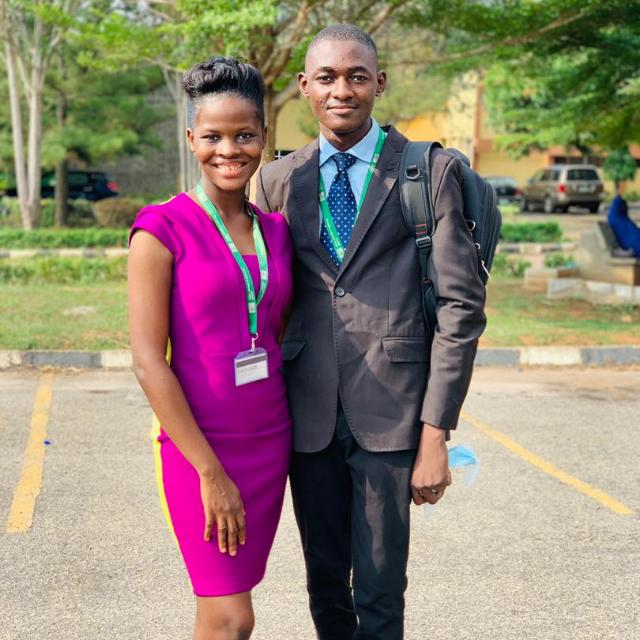

BIOGRAPHY
My full name is OBINEFO IFEANYI. I graduated from FUNAAB with a first class. I studied Agricultural Economics and Farm Management.
AGRIC. ECONOMICS
Achievements so far
1. Best graduating student in the College of Agricultural Management amd Rural Development 2019/2022.
2. Fatgbems Foundation Prize for overall Best Graduating Student in the Department of Agricultural Economics and Farm Managemnt 2019/2022.
3. Prof. & Prof. (Mrs) Sam Oluwalana Prize for Best graduating Student in the Department of Agricultural Economics and Farm Managemnt 2019/2022.
4. Prof. Wale Dipeolu Prize for Overall Best graduating Student in Agric. Econs. and Farm Management 2019/2022.
5. CHIEF Dr. Kola Jamodu Prize for the Best 300L Student in the Department of Agricultural Economics and Farm Managemnt 2017/2018
DEBATING
Achievements so far
1.Prof. Adebola Intervasity Debate 2018
2. OAU Intervasity Debate 2019
3. NASSA Intercollegiate Debate 2021
4. OAU Intervasity Debate 2021